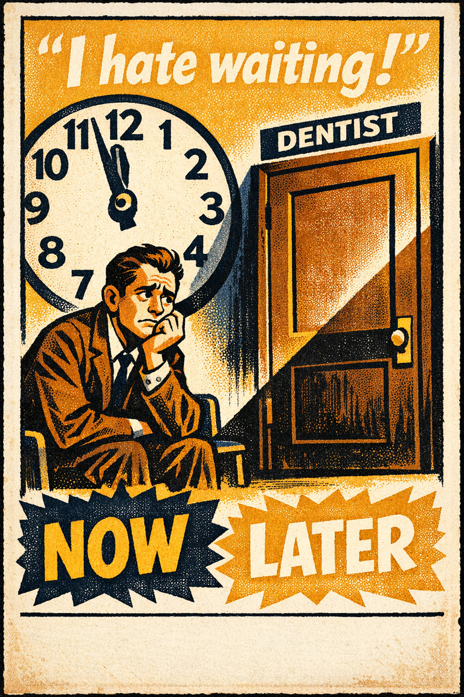

Everyday life
In everyday life, this often looks like people leaning on the easiest first interpretation when situations where decision is already difficult and the association cue feels easier to trust than a fuller review..

Cognitive Biases
A practical cognitive-bias site with clear definitions, learning paths, assessments, self-audits, and debiasing tools.
Cognitive Bias
The preference for reducing a small risk to zero over a greater reduction in a larger risk
What it distorts
Biases that shape choices, commitments, avoidance, preference drift, and action under uncertainty.
Typical trigger
Situations where decision is already difficult and the association cue feels easier to trust than a fuller review.
First countermove
Start with the decision question instead of the first intuitive answer, then check whether the association pattern is doing invisible work.
Best use
Quick reference
What default, fear, sunk cost, or convenience cue is steering the choice more than the forward-looking case?
In decision problems, the mind overweights resemblance, vividness, proximity, or intuitive linkage before a fuller check catches up.
Use the quick check and reflection questions before locking the label. Nearby entries often share the same outer appearance while differing in what actually drives the distortion.
Each example changes the surface context while keeping the same hidden distortion in place.
In everyday life, this often looks like people leaning on the easiest first interpretation when situations where decision is already difficult and the association cue feels easier to trust than a fuller review..
At work, this often appears when teams treat the first coherent story as sufficient instead of slowing the process long enough to compare alternatives.
In public discourse, it often surfaces when commentators move too quickly from salience to conclusion while the underlying evidence remains thinner than it sounds.
The distortion usually feels like ordinary good judgment from the inside, which is why procedural repairs matter more than mere recognition.
Teaching note: Start with the decision problem, then show how the association pattern makes the distortion feel natural from the inside.
The strongest debiasing moves change the process, not just the label.
Start with the decision question instead of the first intuitive answer, then check whether the association pattern is doing invisible work.
Ask someone else to restate the case from a genuinely different starting point before committing.
Change the workflow so this distortion becomes harder to repeat by default next time.
Practice And Repair
Follow the moment where the bias first becomes attractive, then track how that attraction turns into a distorted judgment before jumping straight to the label.
Situations where decision is already difficult and the association cue feels easier to trust than a fuller review.
The first coherent reading starts to feel like ordinary good judgment from the inside.
Biases that shape choices, commitments, avoidance, preference drift, and action under uncertainty.
Start with the decision question instead of the first intuitive answer, then check whether the association pattern is doing invisible work.
What default, fear, sunk cost, or convenience cue is steering the choice more than the forward-looking case?
Spot It
Slow It
Reframe It
These are nearby labels that can share the same outer appearance while differing in what actually drives the distortion. Use the overlap, the distinction, and the diagnostic question together before settling the call.
Why compare it: A nearby label worth comparing before settling the diagnosis.
Why compare it: A nearby label worth comparing before settling the diagnosis.
Why compare it: A nearby label worth comparing before settling the diagnosis.
These are useful when the label seems roughly right but the process change still feels underspecified.
What default, fear, sunk cost, or convenience cue is steering the choice more than the forward-looking case?
What feels connected here mainly because it is salient, familiar, or easy to pair mentally?
What evidence or comparison would most seriously change the current call?
These sourced cases come from closely related biases and help show the same kind of pressure while a direct case for this page catches up.
Automatic enrollment and retirement savings participation
Savings participation often rises sharply when workers are enrolled by default and must actively opt out rather than opt in.
Why it fits: The change in uptake shows how much preselection can guide action before explicit deliberation begins.
Related through: Default effect
Modern workplace policy
Clinical and cockpit automation examples
Research on automation bias shows that people may miss errors of omission or commission because the system recommendation becomes the assumed baseline.
Why it fits: The automation does not just assist. It begins shaping what the human treats as sufficiently checked.
Related through: Automation bias
Modern human-factors research
These linked tools turn the page into practice instead of leaving it at the level of definition.
This bias does not yet have a dedicated path, but these nearby paths are usually the clearest place to see the same family of distortion in motion.
Nearby path
Use this path when the real pull seems to be preserving what is already in hand rather than comparing options cleanly.
Nearby path
Comparison Traps And Choice Architecture
Use this path when you suspect the choice set itself is manufacturing preference rather than merely revealing it.
This bias does not yet have its own dedicated self-check, but these nearby audits usually catch the same kind of drift before it hardens.
Nearby audit
Before You Let The Menu Decide
Am I choosing the best option, or the option the current frame is making easiest to endorse?
Nearby audit
Before You Treat The Default As Neutral
Is the default genuinely best, or just easiest to leave in place?
This bias is not yet the named center of its own kit, but it already appears in nearby workshop material that teaches the same pressure in context.
Nearby workshop
Product Choice-Architecture Audit
A product and UX kit for testing whether defaults, decoys, metrics, and automation are helping users choose or quietly manufacturing preference.
Nearby workshop
A facilitation kit for rooms where agreement, hierarchy, and speed may be replacing independent judgment.
There is no dedicated scenario for this bias yet, but these nearby cases test the same kind of pressure and repair move.
Nearby scenario
Lives saved versus lives lost
The same medical policy gets much stronger support when it is described as saving 90 of 100 patients than when it is described as allowing 10 of 100 patients to die.
Nearby scenario
The famous name at the end of the memo
Executives begin treating a recommendation as almost settled once they learn a famous advisor endorsed it, even though the written rationale itself is thin and the advisor's exper…
These neighbors were selected from shared categories, shared patterns, and explicit editorial links where available.

The tendency to avoid options when their probabilities are unclear, even if the unclear option may not actually be worse than the familiar one.

The tendency to give excess weight to the opinion of a high-status or authoritative source independent of whether the source has earned that weight on the specific issue.

The tendency to depend excessively on automated systems which can lead to erroneous automated information overriding correct decisions.

The tendency to behave more compassionately towards a small number of identifiable victims than to a large number of anonymous ones.

The tendency to favor the preselected or default option simply because it is already positioned as the path of least resistance.

Just as losses yield double the emotional impact of gains, dread yields double the emotional impact of savouring.